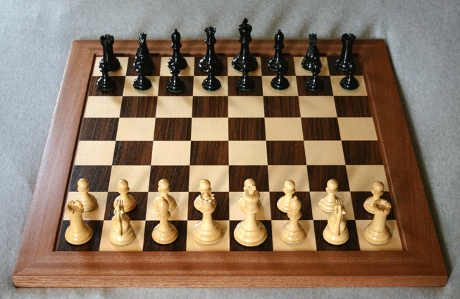

How To Play Chess
Equipment
Chess is played on a square board that is spilt into eight equal-sized rows and columns. This creates sixty-four squares on the chessboard. The familiar checkerboard pattern should come to mind when one thinks of a chessboard.
There are thirty-two chess pieces in all. These thirty-two are split up into sixteen black and sixteen white pieces. Sometimes a dark wood and a light wood are used instead of black and white. Each piece has limitations on how it can be moved.

Movement
To begin playing, the person with the white or light colored pieces moves first. This first execution generally starts with a pawn. Initially, the player has the decision of moving a pawn forward one square or two squares. Ultimately, every move made is at the expense of protecting the king.
| Piece | Image | Move | Direction | Additional Moves |
|---|---|---|---|---|
| {Piece} | {Move} | {Direction} | {Other} |
Strategy
There are many different strategies involved in playing chess. We like to think of every move on the chessboard as a what-if scenario. With each move either building on or taking away from the previous move, it is very important to not rush the game. Take adequate time to make the correct move.